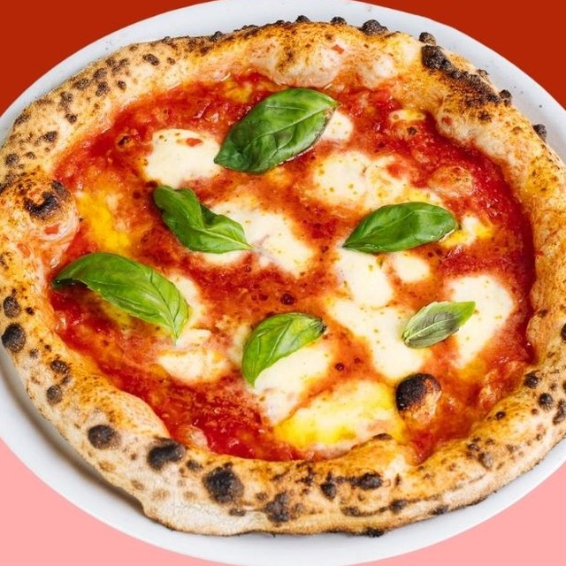
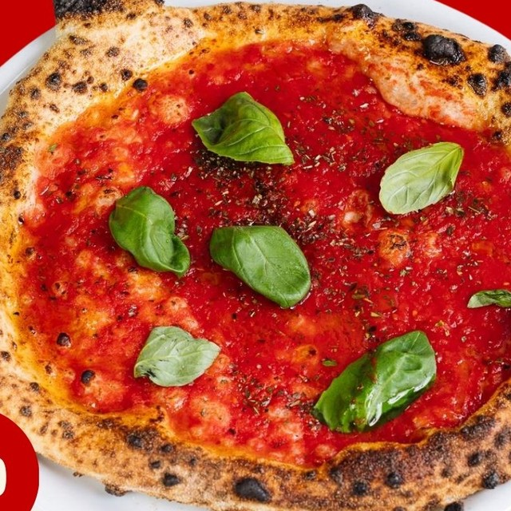
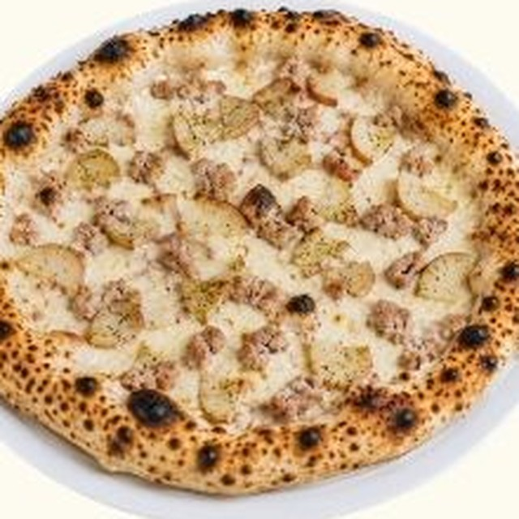
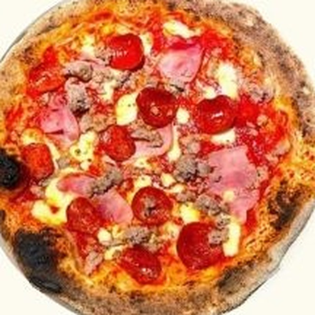
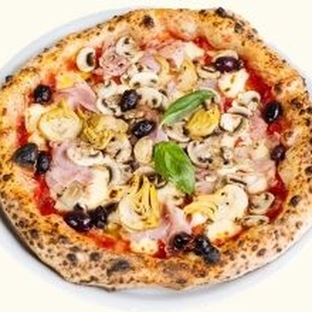
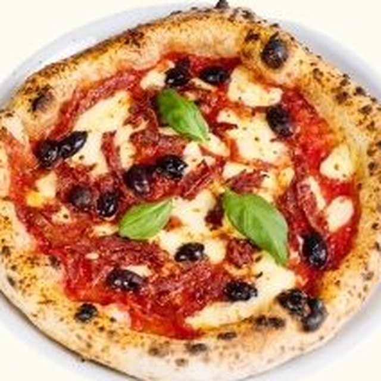
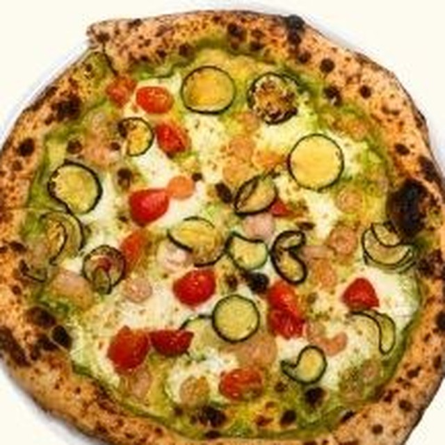
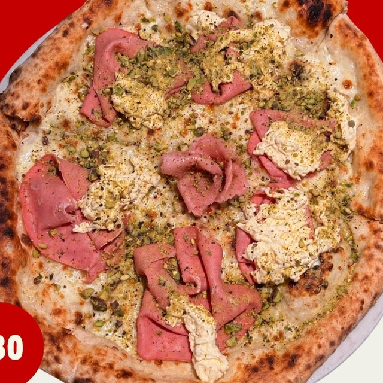
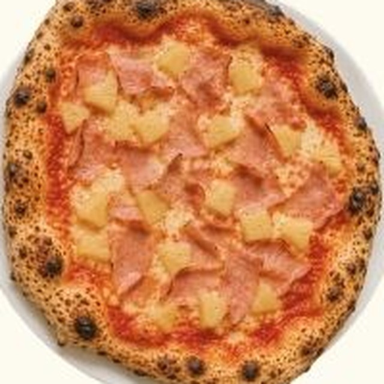
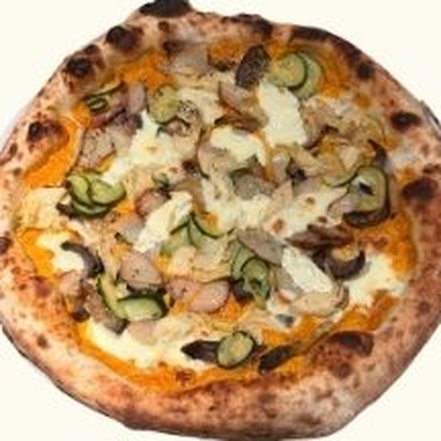

Classic
Level up
Go all in

Margherita
San Marzano tomato, Napoli-cut fior di latte, basil & EVOO 22
Bufalina
+ Buffalo mozzarella 26
Prosciutto
+ Prosciutto & buffalo mozzarella 30

Marinara
San Marzano tomato, oregano & garlic oil 18
Acchugina
+ Anchovies 20
Napoletana
+ Anchovies, olives & mozzarella 25

Salsiccia e Patate
Creamy base of Napoli-cut fior di latte, salsiccia & herb-roasted potatoes 28
Fungaiola
+ Mushroom 29
Sotto Bosco
+ Mushroom & ‘Flavour Bomb’ truffle cheddar XX

La Porcona Rossa
San Marzano tomato, mozzarella, salsiccia, ham & salame 30
La Porcona Bianca
Switch it up with a creamy mozzarella base 30
Porcaccia
+ Crispy guanciale & ‘Flavour Bomb’ truffle cheddar 32

pictured: CapricciosaCotto e Funghi
San Marzano tomato, mozzarella, ham & mushroom 26
Swap the ham for chicken
Capricciosa
+ Artichoke & olives 30
Capricchuga
+ Anchovies XX

Diavola
San Marzano tomato, mozzarella, salame & olives 28
Lucifero
+ ’Nduja 30
Purgatorio
+ ’Nduja & stracciatella XX

Gamberi
Zucchini cream, cherry tomato, mozzarella, parsley & prawns 28
Spishrimps
Stracciatella replaces mozzarella, + ’nduja 30

Mortadella
Creamy mozzarella base, mortadella, stracciatella & pistachio 30
Bombadella
+ ‘Flavour Bomb’ truffle cheddar XX

Hamsorry
San Marzano tomato, mozzarella, ham & pineapple 26
Hambetter
Go bianca + guanciale 28

Vegetariana
Zucchini cream, artichoke, mozzarella, potato, capsicum & eggplant 27
Add chicken +XX
photo
to come
to come
Quattro Formaggi
Mozzarella, scamorza, parmesan & ‘Flavour Bomb’ truffle cheddar XX